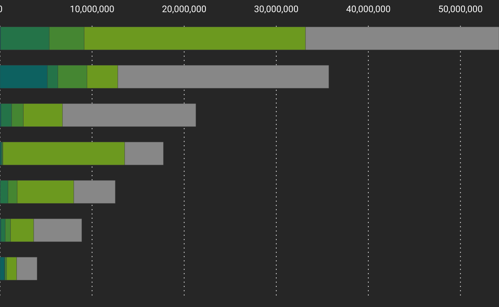
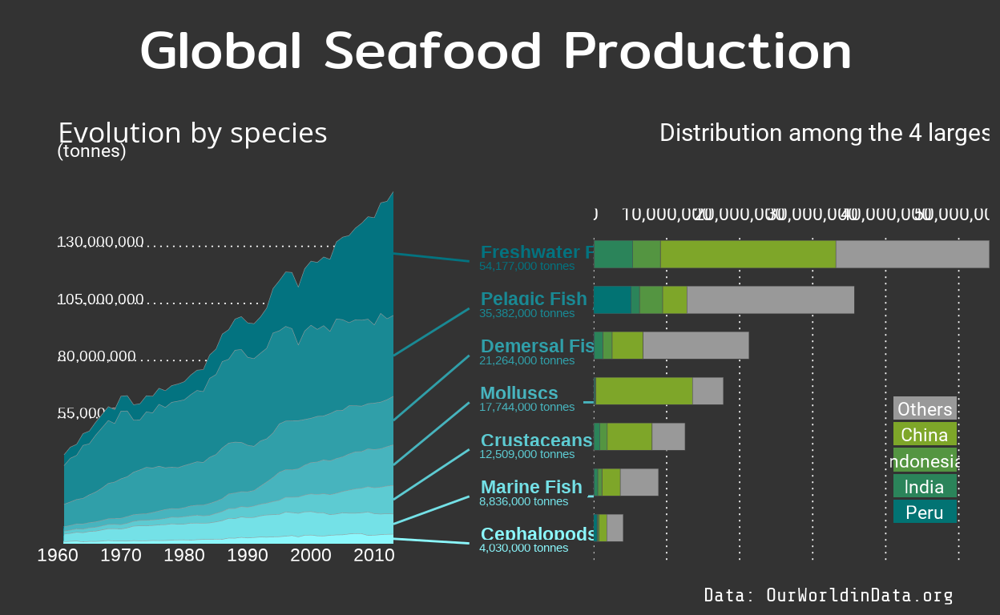
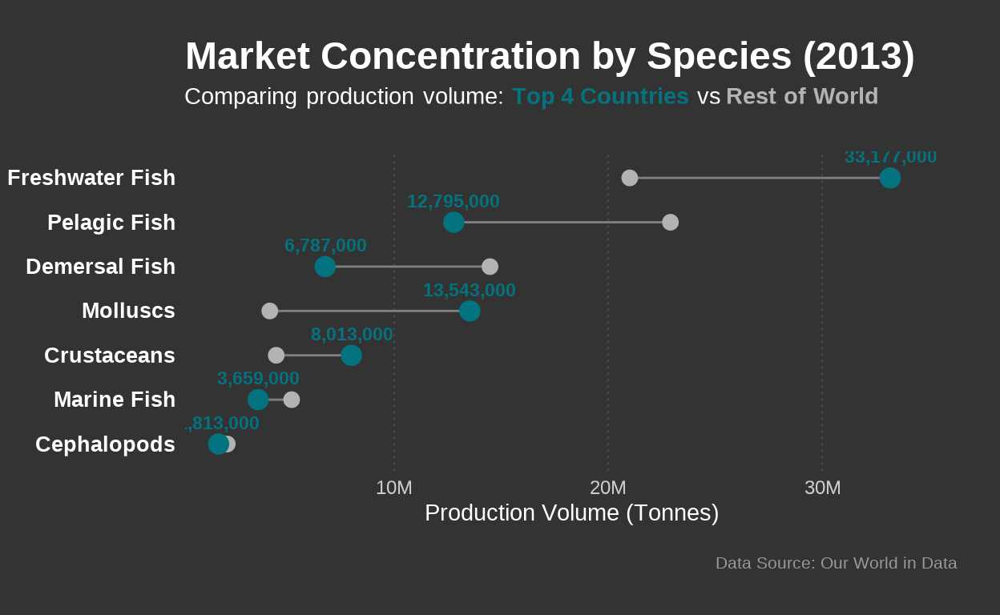

Seafood and fish production in world
This project aims to reproduce a high-quality data visualization, whose data set originally published by Our World in Data, titled “Seafood and fish production”. The dataset, sourced from the Food and Agriculture Organization (FAO), tracks global seafood production from the 1960s to the present day.
Why this chart?

Over the past 50 years, not only the world population doubled, the average person who eats almost twice as much seafood as before. This has increased the pressure on fish stocks across the world.
One innovation has helped to alleviate some of the pressure on wild fish catch: aquaculture, the practice of fish and seafood farming.
In the visualizations we see the change in aquaculture and capture fishery production from 1960 on wards. Reproducing this chart allows us to explore two critical dimensions of this growth:
- Temporal Evolution: Aquaculture production has now surpassed wild catch.
- Geographical Distribution: Which nations are driving this massive increase in supply.
Technically, this project demonstrates advanced ggplot2 skills, including custom geometry construction, manual layout alignment with patchwork, and precise aesthetic replication.
Global production of fish and seafood has quadrupled over the past 50 years.
Before we start
Library and fonts
To replicate the graph, the below packages and font families were used. The fonts were retrieved, for free, from Google Fonts. The libraries are commented within the chunks they started being used.
library(tidyverse)
library(scales)
library(tidytext)
library(glue)
library(patchwork)
library(showtext)
library(ggplot2)
library(patchwork)
library(ggtext)
font_add_google("Roboto", "roboto")
font_add_google("Mitr", "mitr")
font_add_google("Khula", "khula")
font_add_google("Share Tech Mono", "techmono")
showtext_opts(dpi = 320)
showtext_auto(enable = TRUE)Clean and know the data
Data set about the seafood can be directly read from the official website of our world in data, which help me reduced lots of work from getting data from different sources. The first glance of the database can tell us many information about the features and value of this dataset:
- There are 10 columns and 12,923 rows in the data set
- Year column is in
intformat, we don’t have to modify - There are na values in
productioncolumns, we have to replace them with 0, in order to do further calculation later
# read the data set from our world in data website
seafood <- read.csv("seafood-and-fish-production-thousand-tonnes.csv")
# take a glimpse of the data set and know about the values
glimpse(seafood)Rows: 12,923
Columns: 10
$ Entity <chr> "Af…
$ Code <chr> "AF…
$ Year <int> 196…
$ cephalopods__00002766__production__005511__tonnes <dbl> NA,…
$ molluscs__other__00002767__production__005511__tonnes <dbl> NA,…
$ crustaceans__00002765__production__005511__tonnes <dbl> NA,…
$ marine_fish__other__00002764__production__005511__tonnes <dbl> NA,…
$ demersal_fish__00002762__production__005511__tonnes <dbl> NA,…
$ pelagic_fish__00002763__production__005511__tonnes <dbl> NA,…
$ freshwater_fish__00002761__production__005511__tonnes <dbl> 300… Entity
0
Code
0
Year
0
cephalopods__00002766__production__005511__tonnes
3059
molluscs__other__00002767__production__005511__tonnes
3165
crustaceans__00002765__production__005511__tonnes
1342
marine_fish__other__00002764__production__005511__tonnes
1873
demersal_fish__00002762__production__005511__tonnes
2019
pelagic_fish__00002763__production__005511__tonnes
1791
freshwater_fish__00002761__production__005511__tonnes
490 # replace na values with 0
seafood <- seafood |>
mutate(
across(where(is.numeric), ~replace_na(., 0))
)But we still need to do some adjust to make it to the best format for ggplot2:
- Column names are difficult to read and quote, need to change and optimize
- Make the data base into longer format
- The data set quoted from website keeps updating until 2022, but the original data max year is until 2012. Filter data by maximum year is 2013.
#rename the columns
df <- seafood |>
rename(
entity = Entity,
code = Code,
year = Year,
cephalopods = `cephalopods__00002766__production__005511__tonnes`,
molluscs = `molluscs__other__00002767__production__005511__tonnes`,
crustaceans = `crustaceans__00002765__production__005511__tonnes`,
marine_fish = `marine_fish__other__00002764__production__005511__tonnes`,
demersal_fish = `demersal_fish__00002762__production__005511__tonnes`,
pelagic_fish = `pelagic_fish__00002763__production__005511__tonnes`,
freshwater_fish = `freshwater_fish__00002761__production__005511__tonnes`
) |>
pivot_longer(
cols = -c(entity, code, year),
names_to = "fish", # name of new columns
values_to = "production" # production column to save quantity
) |>
mutate(fish = str_to_title(str_replace_all(fish, "_", " "))) |>
filter(year <= 2013)
summary(df) entity code year
Length:76160 Length:76160 Min. :1961
Class :character Class :character 1st Qu.:1974
Mode :character Mode :character Median :1988
Mean :1988
3rd Qu.:2001
Max. :2013
fish production
Length:76160 Min. : 0
Class :character 1st Qu.: 0
Mode :character Median : 2750
Mean : 427916
3rd Qu.: 65092
Max. :54177000 Now we have removed na values and get the data set in longer format, and also make the column names easy to quote.
Reproduction of the chart
Blue Revolution Chart
Background
Technically, this is a Labelled Stacked Area Chart. It is difficult to make because standard charts usually have a legend on the side. This chart uses “Spider Legs” to connect labels directly to the data, which is more elegant but harder to code.
Before we start coding, we get the data, color and matrix preparation for the plot.
# ------1. data cleaning ------
# sum up the world data
production_sum <- df |>
filter(entity == "World") |>
group_by(year, fish) |>
summarise(total = sum(production, na.rm = TRUE)) |>
ungroup()
# reorder the fish data to reproduce original chart, at 2013,desc
fish_order <- production_sum |>
filter(year == max(year)) |>
arrange(desc(total)) |>
pull(fish)
#-------2. color set up -------
bck_color <- "grey20"
# use colorRampPalette to create the continues color
my_colors <- colorRampPalette(c("#037380", "#8BF7FC"))(length(fish_order))
names(my_colors) <- fish_order # make sure the color match with the name of the fishTricky part- Spider leg
This chart used “spider leg” to connect 2 charts and make it aethetically beautiful.
- Start point(
posy): The geometric center of each colored slice at the last year, which is top of the slice minus half its height - End point:(
posyend): An artificial list of evenly spaced numbers created so the text labels don’t overlap. - Order arrange: Make sure the data at the bottom match with the bottom of the label by using `arrange(total)`
#-------3. spider leg logic-------
# only use the last year data
lines_label <- production_sum |>
filter(year == max(year)) |>
# fish order: in the original photo the order is descend by fish
arrange(total) |>
#starting point of the left leg, the middle of every species
mutate(
cum = cumsum(total),
posy = cumsum(total) - total / 2
) |>
# we can order again based on the posy
#arrange(posy) |>
# the position ending of y label
bind_cols(posyend = seq(1, 14.4e7, 14.4e7/7))
summary(lines_label) year fish total
Min. :2013 Length:7 Min. : 4030000
1st Qu.:2013 Class :character 1st Qu.:10672500
Median :2013 Mode :character Median :17744000
Mean :2013 Mean :21991714
3rd Qu.:2013 3rd Qu.:28323000
Max. :2013 Max. :54177000
cum posy posyend
Min. : 4030000 Min. : 2015000 Min. : 1
1st Qu.: 19120500 1st Qu.: 13784250 1st Qu.: 30857144
Median : 43119000 Median : 34247000 Median : 61714287
Mean : 57640000 Mean : 46644143 Mean : 61714287
3rd Qu.: 82074000 3rd Qu.: 67912500 3rd Qu.: 92571430
Max. :153942000 Max. :126853500 Max. :123428572 Create axis and grid Manually
To show the minimum and precise style of this chart, we didn’t use the original axis, grid of ggplot. So based on the range of the total production of the fish in the world and year we are recording, we create axis and grid lines manually.
# manually create the axis for the whole plot
axis_p1 <- tibble(
x = 1960, # start from the earliest year of the data
xend = 2013, # end of the year as the end of x-axis
y = seq(5.5e7, 15e7, 2.5e7), # y-axis based on the production, we will see 5 lines
yend = y # to make it at the same level
)
# 5. year label of x-axis, 5 year lable at the bottom
year_list <- tibble(year = seq(1960, 2010, 10))plotting
In this section, I am moving away from ggplot2’s automatic settings to build a bespoke foundation for the chart. Instead of letting the software decide where the lines and labels go, I am taking manual control of every pixel to match the high-end aesthetic of Our World in Data.
# ---1. remove original axis and grid, plot the area
p_area_axis <- production_sum |>
# obce again make sure the fish order
mutate(fish = fct_relevel(fish, fish_order)) |>
ggplot() +
theme_void()+ # to remove all the background grids
# ---background grid remake ---
# white dot y labels from 50m to 150m based on axis_p1
geom_segment(data = axis_p1, aes(x = x, xend = xend, y = y, yend = yend),
color = "white",
linetype = "dotted",
size = 0.3,
inherit.aes = FALSE) +
# Y axis text white
geom_text(data = axis_p1,
aes(x = x, y = yend, label = comma(yend)),
color = "white",
hjust = 0, #left top of the chart
nudge_y = 2e6, #move it upward
size = 2.5,
inherit.aes = FALSE) +
# X axis, x text the years
geom_text(data = year_list,
aes(x = year, y = -5e6, label = year),
color = "white",
size = 3,
inherit.aes = FALSE) +
# --- stacked area plot, main plot ---
geom_area(aes(year, total, fill = fish), color = "grey60", size = 0.1)+
scale_fill_manual(values = my_colors) +
scale_color_manual(values = my_colors) +
theme(
plot.background = element_rect(fill = bck_color, color = NA)
)
print(p_area_axis)
For this section we will build up the spider leg and try to connect the plot on the left and the right.
We use geom_label and annotation to label the necessary information on the spider legs.
# plot the spider leg and add text and label
production_species_plt <- p_area_axis +
# --- spider leg ---
# first leg start point: the left part before the label
geom_segment(data = lines_label,
aes(x = 2013,
xend = 2025,
y = posy,
yend = posyend,
color = fish)) +
# first leg ending point
geom_segment(data = lines_label,
aes(x = 2030, xend= 2050, y = posyend, yend = posyend, color = fish)) +
# --- label in the middle ---
# add the name of the fish
geom_label(data = lines_label,
aes(x = 2026, y = posyend, label = fish, color = fish),
fill = bck_color,
size = 3,
nudge_y = 4e6,
linewidth = 0,
hjust = 0,
fontface = "bold",
inherit.aes = FALSE) +
# add the total production volume
geom_label(data = lines_label,
aes(x = 2026, y = posyend, label = glue("{comma(total)} tonnes"), color = fish),
fill = bck_color,
size = 2,
nudge_y = -2e6-500,
linewidth = 0,
hjust = 0,
inherit.aes = FALSE) +
# other caption
annotate("text", x = 1960, y = 180e6,
label = "Evolution by species",
family = "khula",
size = 5,
color = "white",
hjust = 0) +
annotate("text", x = 1960, y = 172e6,
label = "(tonnes)",
family = "roboto",
size = 3,
color = "white",
hjust = 0) +
annotate("text", x = 2055, y = 180e6,
label = "Distribution among the 4 largest producers for year 2013",
family = "roboto",
size = 4,
color = "white"
, hjust = 0)+
# --- final look setting ---
guides(fill = "none", color = "none") +
scale_x_continuous(limits = c(1958,2100))
print(production_species_plt)
The Geography of Seafood Production
Design Background
The first chart looks at seafood production over time and shows how it has changed over the past 50 years. The second chart shifts to a geographic view, highlighting which countries contributed the most to the growth of Aquaculture.
To explore this, we selected the top four seafood-producing countries and connected their production to different fish categories to see how each country influenced the overall trend.
Data frame preparation
The data preparation for the second chart is more complicated and redundant. To create this visualization,
- we first selected the top four countries with the highest seafood production in 2013 and grouped all remaining countries into an “Other” category. This results in a bar chart with five colors in total.
- To keep the chart visually clean, the “Other” bar is always placed at the end
- In addition, within each fish category (bar), countries are ordered from highest to lowest production.
Limitation
this ordering method is quite complex. It makes the data cleaning process unnecessarily repetitive and also makes comparisons across countries more difficult.
So I have decided not to 100% recreate the order of original chart. I will only follow make “others” at the end order. :::
# -----1. Top 4 countries data ------
selection <- df |>
filter(entity != "World", !is.na(code),code != "", year == 2013) |>
group_by(entity, code) |>
summarise(total = sum(production, na.rm = TRUE), .groups = "drop") |>
# slice the top4 countries with highest production
slice_max(total, n = 4) |>
# only get the code and entity
select(code, entity)
print(selection)# A tibble: 4 × 2
code entity
<chr> <chr>
1 CHN China
2 IDN Indonesia
3 IND India
4 PER Peru # ----2. data by species in each country----
df_right <- df |>
# we only use the data of year 2013
filter(year == 2013, !is.na(code), entity != "World", code != "") |>
# categorize the countries, if it is not top4 mark as OTH
mutate(code = ifelse(code %in% selection$code, code, "OTH"),
entity = ifelse(entity %in% selection$entity, entity, "Others")) |>
# group by and summarise
group_by(year, fish, code, entity) |>
summarise(total = sum(production, na.rm = TRUE), .groups = "drop") |>
# --- key: how to order the bar and countries order ---
mutate(
# the base of order: make sure the other is ordered as 0
entity = factor( levels = c("Others",selection$entity),entity),
# the fish order is the y axis
fish = fct_relevel(fish, rev(fish_order))
)Set up the color of bars and background
# ----- set up color-----
# 1 base color, this determine the color of the bars, 5 in total
base_colors <- tibble(
entity = c("Others", selection$entity),
color = c("grey60", colorRampPalette(c("#7EA629", "#027373"))(4))
)
# 2 map the color to the entity_wt, make sure we will have only 5 colors
color_mapping_df <- df_right |>
select(entity) |>
distinct() |>
left_join(base_colors, by = "entity")
# 3 final Named Vector
final_color_vec <- color_mapping_df$color
names(final_color_vec) <- color_mapping_df$entity
# background axis as a grid
axis_p2 <- tibble(
y = seq(0, 5e7, 1e7),
yend = seq(0, 5e7, 1e7),
x = 0.3,
xend = 7.4 # has to be bigger than 7
)Plotting stacked bar chart
This chart is aiming to create a new stacked chart so that we can show the other countries production and also the top 4 countries production by order. So we can compare which countries fresh water production contributes the most to the transition from sea hunting to fresh water farming.
# ----stacked bar chart plotting-------
production_right_plt <- ggplot(df_right,
aes(x = as.numeric(fish), y = total, fill = entity)) +
# --- background decoration ---
# white dot background
geom_segment(data = axis_p2, aes(x = x, xend = xend, y = y, yend = yend),
color = "white", linetype = "dotted", size = 0.3, inherit.aes = FALSE) +
# --- key plot: the bar plot ---
# [key point] x = as.numeric(fish)
geom_col(width = 0.6, color = "grey30", linewidth = 0.1) +
# --- other settings ---
coord_flip() + # flip the axis
scale_fill_manual(values = final_color_vec) +
# number label at the top
geom_text(data = axis_p2, aes(x = xend, y = yend, label = comma(yend)),
color = "white", vjust = -0.5, size = 3, inherit.aes = FALSE, nudge_x =0.2, family = "roboto") +
#
scale_x_continuous(limits = c(0, 8), expand = c(0,0)) +
scale_y_continuous(expand = c(0,0)) +
theme_void() +
theme(plot.background = element_rect(fill = bck_color, color = NA))
# show plot
production_right_plt
Create new labels
ggplot default labels are not pretty, and the original plot also didn’t use the labels. Instead it created new labels which is more compliacted and couldn’t fit in the canva. So we remove the original labels and create our labels with only top 4 countries and other countries.
# remove the original
production_right_plt <- production_right_plt + guides(fill = "none")
production_right_plt
# create a new label of the bar chart
legend_plt <- base_colors %>%
bind_cols(y = seq(5,1,-1)) %>%
ggplot()+
geom_rect(aes(xmin = 1, xmax = 2, ymin = y, ymax = y +0.9, fill = color))+
geom_text(aes(x = 1.5, y = y+0.4, label = entity), size = 3, family = "roboto", color = "white") +
scale_fill_identity()+
theme_void()
legend_plt
Final Assembly
To provide a comprehensive view of the global seafood industry, we constructed a composite visualization that integrates two distinct temporal dimensions:
The “Time” Layer (Left): The main plot traces the historical evolution of production volumes by species from 1960 to 2013, visualizing the “Blue Revolution” (the rise of aquaculture).
The “geographical” Layer (Right): Embedded on the right side is a detailed breakdown of the year 2013. This stacked bar chart dissects the production of each species by country, highlighting the dominance of the “Top 4” producers (China, Indonesia, India, Peru) versus the rest of the world.
offset <- 0.05
final <- production_species_plt +
inset_element(production_right_plt, 0.6,0.055-offset,1, 0.84-offset)+
inset_element(legend_plt, 0.9,0.1, 0.97, 0.4)+
plot_annotation(
caption ="Data: OurWorldinData.org",
title = "Global Seafood Production",
theme=theme(
plot.background = element_rect(fill = bck_color, color = NA),
plot.margin = margin(10,5,5,0),
plot.title = element_text(family = "mitr", size = 25, color = "white", hjust = 0.5, margin = margin(5,0,15,0)),
plot.caption = element_text(family = "techmono", size = 9, color = "white", hjust = 0.95)
)
)
final
Limitation
- the order of the bar charts
- the height of the right leg is not matching with the height of bar chart
- Bar chart couldn’t clearly
Optimization
Left chart interactive
library(tidyverse)
library(plotly)
library(scales)
# background color
safe_bck_color <- "#333333"
# --- data preparation---
production_enhanced <- production_sum |>
group_by(year) |>
mutate(yearly_total = sum(total)) |>
ungroup() |>
mutate(fish = factor(fish, levels = fish_order))
# the label on the right
right_axis_data <- production_enhanced |>
filter(year == 2013) |>
arrange(desc(fish)) |>
mutate(label_y = cumsum(total) - total / 2)
# --- Annotations ---
right_labels_annotations <- list()
for(i in 1:nrow(right_axis_data)) {
label_info <- list(
xref = "paper", yref = "y", x = 1.01, y = right_axis_data$label_y[i],
text = as.character(right_axis_data$fish[i]),
showarrow = FALSE, xanchor = "left",
font = list(color = "white", size = 12, family = "Arial")
)
right_labels_annotations[[i]] <- label_info
}
# ggploting
p_final_style <- ggplot(production_enhanced, aes(x = year, y = total, fill = fish, group = fish)) +
geom_area(alpha = 0.9, color = "grey60", linewidth = 0.1) +
# interactive points
geom_point(
aes(text = paste0(
"<b>Year:</b> ", year, "<br>",
"<b>Species:</b> ", fish, "<br>",
"<b>Production:</b> ", comma(total), " tonnes<br>",
"<b>Global Total:</b> ", comma(yearly_total), " tonnes"
)),
position = "stack", alpha = 0.01, size = 0.1, color = "transparent"
) +
scale_fill_manual(values = my_colors) +
scale_y_continuous(
labels = label_number(scale = 1e-6, suffix = "M"),
expand = c(0, 0),
breaks = seq(0, 200e6, 20e6)
) +
scale_x_continuous(expand = c(0, 0), breaks = seq(1960, 2013, 10)) +
theme_minimal() +
theme(
legend.position = "none",
plot.background = element_rect(fill = safe_bck_color, color = NA),
panel.background = element_rect(fill = safe_bck_color, color = NA),
# remove the grids
panel.grid.major.x = element_blank(),
panel.grid.minor = element_blank(),
panel.grid.major.y = element_line(color = "grey50", linewidth = 0.1, linetype = "dotted"),
text = element_text(color = "white"),
axis.text = element_text(color = "grey90")
)
# --- interactive plot ---
final_widget_style <- ggplotly(p_final_style, tooltip = "text") %>%
layout(
plot_bgcolor = safe_bck_color,
paper_bgcolor = safe_bck_color,
font = list(color = "white"),
title = list(
text = "<b>Global Seafood Production Evolution</b>",
x = 0.05, y = 0.95,
font = list(size = 20, color = "white")
),
annotations = right_labels_annotations,
margin = list(r = 160, t = 80, b = 50, l = 50),
hovermode = "closest",
xaxis = list(
showgrid = FALSE
),
# y axis, dots
yaxis = list(
showgrid = TRUE,
gridcolor = "white",
gridwidth = 0.2,
griddash = "dot",
alpha =0.5
)
) %>%
style(hoverlabel = list(bgcolor = "white", font = list(color = "black")))
final_widget_styleRight chart in lollipop chart
# --- aesthetic settings ---
bck_color <- "grey20" #background color
highlight_color <- "#037380"
base_color <- "grey70"
# data preparation
df_lollipop <- df |>
filter(year == 2013, !is.na(code), entity != "World", code != "") |>
mutate(group = ifelse(code %in% selection$code, "Top 4", "Rest of World")) |>
group_by(fish, group) |>
summarise(total = sum(production, na.rm = TRUE), .groups = "drop") |>
pivot_wider(names_from = group, values_from = total, values_fill = 0) |>
# order make sure that they top4 is at top
mutate(total_production = `Top 4` + `Rest of World`) |>
mutate(fish = fct_reorder(fish, total_production))
# plot
p_lollipop_standalone <- ggplot(df_lollipop) +
# segment of ceonnection
geom_segment(aes(y = fish, yend = fish,
x = `Rest of World`, xend = `Top 4`),
color = "grey50", size = 0.5) +
geom_point(aes(y = fish, x = `Rest of World`),
color = base_color, size = 3) +
# highlight the top 4
geom_point(aes(y = fish, x = `Top 4`),
color = highlight_color, size = 4) +
# text labels
geom_text(aes(y = fish, x = `Top 4`, label = comma(`Top 4`)),
color = highlight_color, size = 3, vjust = -1.2, family = "sans", fontface = "bold") +
# axis
scale_x_continuous(
labels = label_number(scale = 1e-6, suffix = "M"),
expand = expansion(mult = c(0.05, 0.1))
) +
# title and theme
labs(
title = "Market Concentration by Species (2013)",
subtitle = "Comparing production volume: <span style='color:#037380'>**Top 4 Countries**</span> vs <span style='color:grey70'>**Rest of World**</span>",
caption = "Data Source: Our World in Data",
x = "Production Volume (Tonnes)",
y = NULL
) +
theme_minimal() +
theme(
plot.background = element_rect(fill = bck_color, color = NA),
panel.background = element_rect(fill = bck_color, color = NA),
# grid settings
panel.grid.major.y = element_blank(), #remove horizontal grids
panel.grid.major.x = element_line(color = "grey40", size = 0.2, linetype = "dotted"),
panel.grid.minor = element_blank(),
# text color
text = element_text(color = "white"),
axis.text.y = element_text(color = "white", size = 10, face = "bold"), # name of the fish
axis.text.x = element_text(color = "grey80", size = 9),
plot.title = element_text(size = 18, face = "bold", margin = margin(b = 5)),
plot.subtitle = element_markdown(size = 11, margin = margin(b = 20)),
plot.caption = element_text(color = "grey60", size = 8, margin = margin(t = 15)),
# margin
plot.margin = margin(20, 20, 20, 5)
)
# print the result
print(p_lollipop_standalone)
Final conclusion
Ultimately, this visualization captures the ‘Blue Revolution’—the moment in history where human ingenuity in aquaculture began to outpace traditional ocean harvesting. We see a world transitioning from a reliance on wild ecosystems to the precision of managed production.
Technical Resilience
From a technical standpoint, this project demonstrates the power of the R ecosystem. By bypassing default themes to build manual grids, hacking coordinate systems to ensure alignment, and debugging interactive tooltips for a dark-mode environment, we created a reproducible and production-ready data product that goes far beyond standard out-of-the-box visualizations.
Especially, by my optimization, I showed clearly quantitavely the data of the transaction, and this is to me very important in data visualization, to convey clear and efficient data to the audience.
Final Thought
Data visualization is the bridge between raw numbers and human understanding. Through this project, we’ve shown that even the most complex global shifts can be made clear, accessible, and engaging through thoughtful design and rigorous engineering.